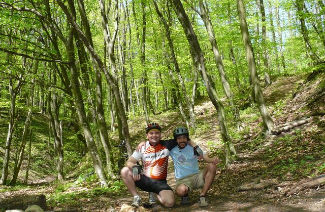
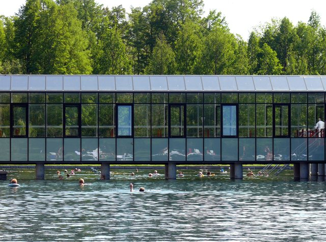

Az utolsó médialabor után, két héttel ezelőtt csütörtökön felkerekedtem, bepakoltam a nagy dobozt és a bringát, meg némi cuccot és irány Hévíz. Yorkkal terveztük ezt a 11 napos munka-pihenés kombinációt, utólag konstatáltuk, hogy az együtt-dolgozáshoz nem a leghatékonyabb olyan időtartamot választani, amiben 10 napból 6 szünnap :) No sebaj, több jutott bringázásból, Hévízi-tóból és a Balatonból.
Tehát csütörtök este megérkeztem a szállásra, ahol wifi, jó kis hintaágy, finom kaják voltak végig.
Szombaton mentünk egy bringatúrára a Keszthelyi-hegységben, amit York vázolt fel, elsőre ijesztőnek tűnt, menet közben kevésbé volt rémisztő, de mindketten jól elfáradtunk a végére. York persze majdnem minden dombtetőn előbb ott volt, de hát én végképp hébe-hóba tekerek, akkor is nagyon keveset.
Kerestünk forrást az erdőben, találtunk is, csak nem igazán üzemelt.

Így aztán megörökítettük, hogy ott jártunk és szomjasan feltoltuk a meredeken a bicikliket :)
A helyzet jobbra fordult a második kilátónál, ahhol is ez tárult a szemünk elé:
meg ez:
Ezen felbuzdulva meg sem álltunk egészen a Balaton partjáig, elkoptatva egy kicsit a fékpofákat (York esetében tárcsáról beszélünk persze). Onnan meg már nyilván nem volt kedvünk visszamászni, egyszerűen a Balatont kerülő bringaúton visszatekertünk Keszthelyre laza tempóban.
A négy nap hosszú volt még, hétfőn a Kis-Balatont vettük célba, klasszikusan a Kányavári-sziget felé vettük az irányt:
A szigeten inkább már csak toltuk a bringákat, a sok gyalogos és a sok látnivaló miatt:
Dolgoztunk is, sajnos nem azonos projekten, de azért jutott időnk eszmét cserélni szűkebb munkahelyi kérdésekről (hogyan legyen már végre tényleg bevezetve a scrum és így tovább) és általános kocka-témákról, mint hogy hogyan kéne a sysadminoknak jól végezni a dolgát, linux-disztribek lelkivilága, stb. Péntek este még egy Drupal Users Group is volt, York volt kollégái voltak jelen, szerintem remekül sikerült ez is, remélem, hogy ezzel hagyományt sikerült teremteni és lesz folyománya! DUG-ot minden városba :)
Második hétvégén nálam a Hévízi-tó került a középpontba.

Kellemes meleg a vize és állítólag még gyógyhatású is, no meg radioaktív. Ez jó poénforrás, persze olyan csekély mértékről van szó, ami pusztán antibakteriális hatást ad neki, semmi több.
Mellesleg a Balatonban is úsztam egy kicsit (május elejéről beszélünk), nem volt hideg a víz szerda este (a svédeknek a Balaton sosem hideg, de azért nekünk az szokott lenni, más őrült persze nem ment bele a vízbe), a sekély keszthelyi öblöt gyorsan fel tudta melegíteni. Más téma, de kerestünk egy egyszerűbb geoládát is, ilyet sem csináltam még eddig.
Röviden: Keszthely és Hévíz is igazán remek hely, Keszthelyen ráadásul rengeteg mindent kihagytunk, amit terveztünk, az egyik fő a modellvasút-kiállítás volt, no de majd máskor.
Ezúton is köszönöm a fantasztikusan jó vendéglátást Yorknak és feleségének, Krisztának.
A Kis-Balatonos első képet York csinálta, a többit én lőttem.
- A hozzászóláshoz regisztráció és bejelentkezés szükséges